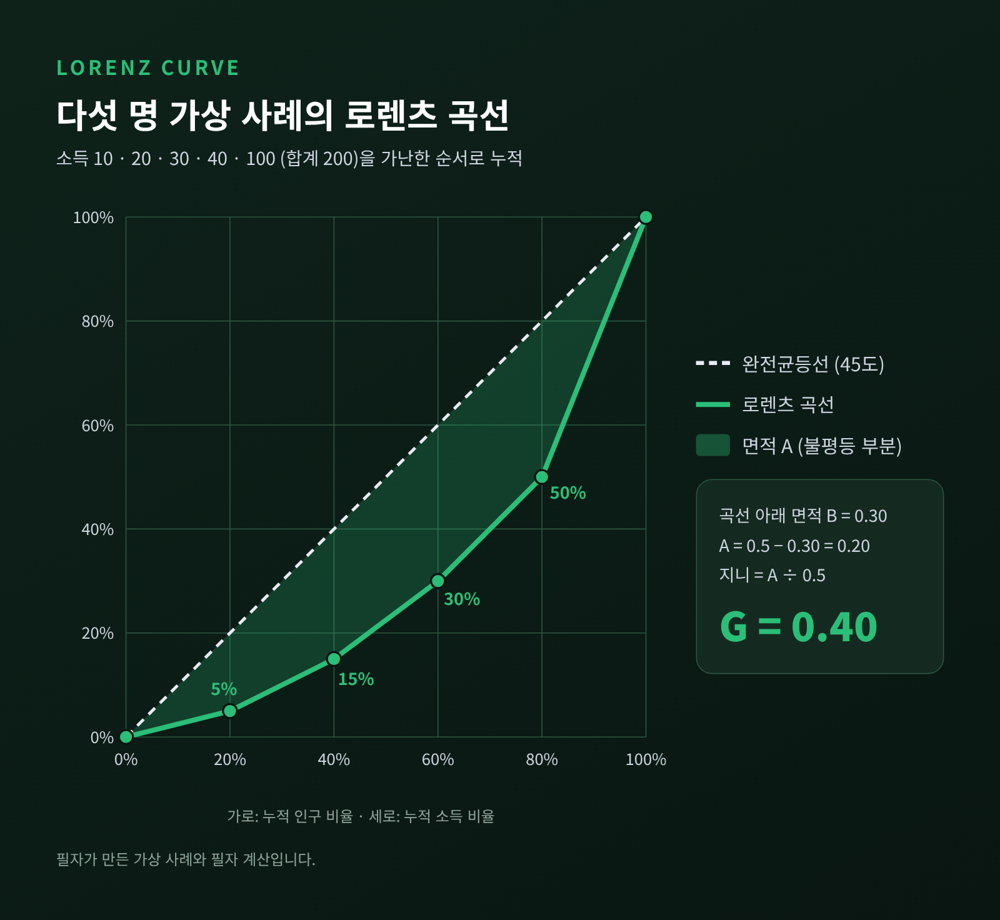
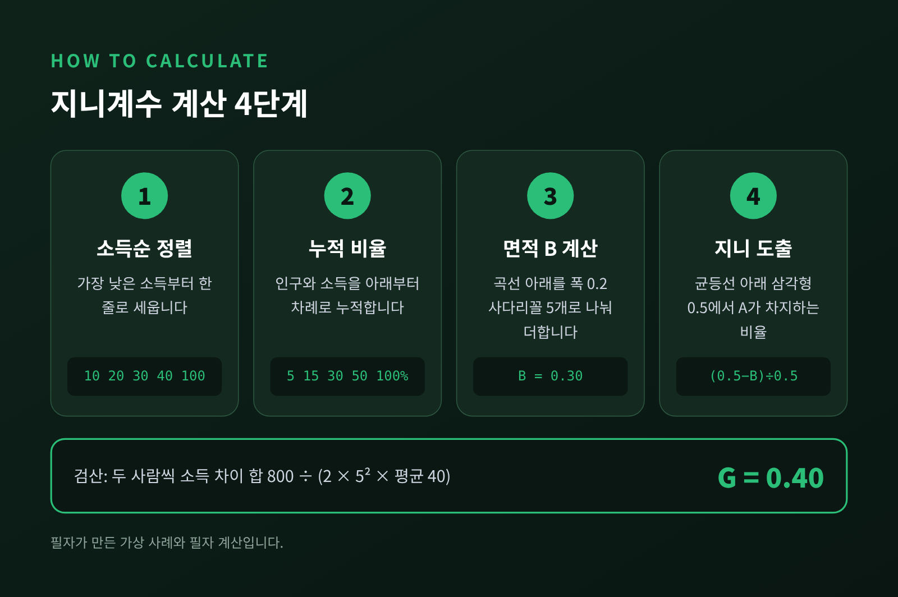
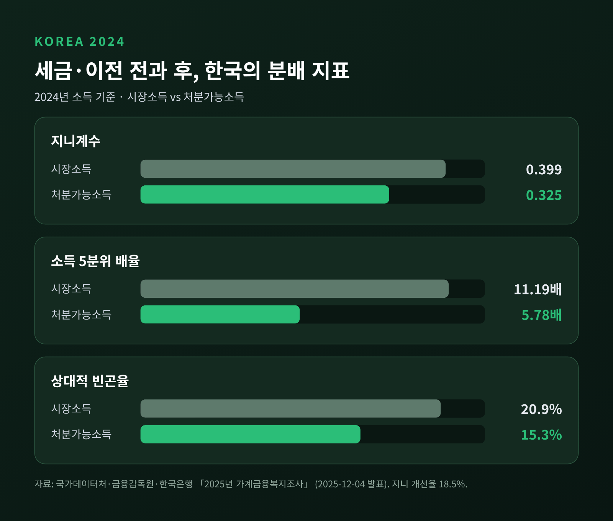
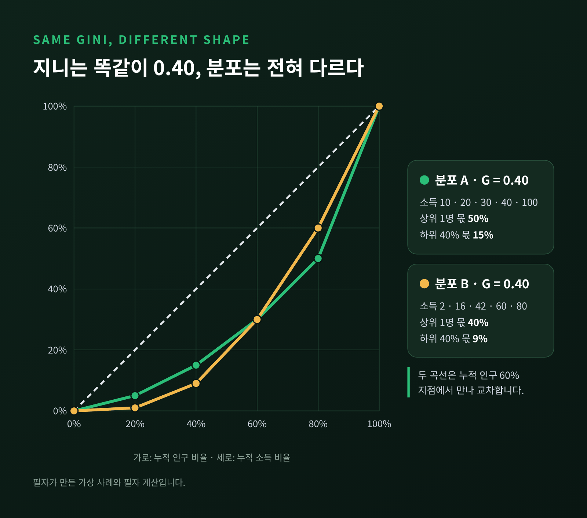
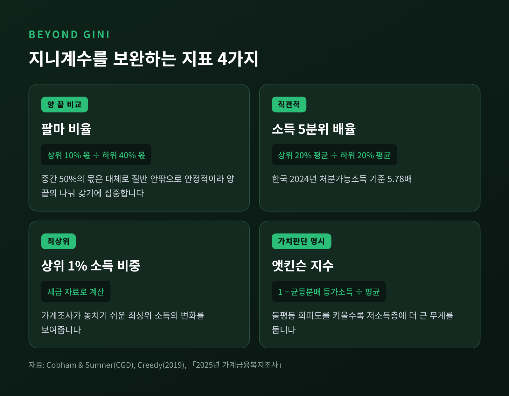

지니계수와 로렌츠 곡선 — 불평등을 숫자 하나로 재는 원리와 한계

이번 글에서는 소득 불평등을 재는 대표 지표, 지니계수와 로렌츠 곡선을 정리해 보겠습니다.
그림을 어떻게 그리는지, 숫자가 어떻게 나오는지, 그리고 그 숫자가 놓치는 것은 무엇인지까지 차례로 살펴봅니다.
세 줄 요약
- 로렌츠 곡선은 '하위 몇 %가 소득의 몇 %를 갖는가'를 누적해 그린 선이고, 지니계수는 이 곡선이 균등선에서 얼마나 처졌는지를 0~1 사이 숫자로 바꾼 값입니다.
- 2025년 가계금융복지조사(2024년 소득 기준) 한국의 처분가능소득 지니계수는 0.325, 시장소득 지니계수는 0.399입니다.
- 지니계수는 편리하지만 분포의 모양, 양 끝의 변화, 자산 격차를 잘 보여주지 못해 팔마 비율·5분위 배율 같은 보완 지표와 함께 읽어야 합니다.
■ 로렌츠 곡선은 어떻게 그리나
출발점은 줄 세우기입니다.
모든 사람(또는 가구)을 소득이 낮은 순서대로 한 줄로 세웁니다.
그다음 가장 가난한 쪽부터 사람 수와 소득을 함께 누적해 나갑니다.
가로축은 누적 인구 비율, 세로축은 누적 소득 비율입니다.
"하위 20%가 전체 소득의 5%를 갖는다"면 (20%, 5%)에 점을 하나 찍는 식입니다.
하위 40%, 60%, 80%까지 같은 방식으로 점을 찍고 이으면 곡선이 됩니다.
마지막 점은 언제나 (100%, 100%)입니다.
비교 기준은 45도 대각선입니다.
모두가 똑같이 번다면 하위 20%는 정확히 20%, 하위 60%는 60%를 가져갑니다.
그래서 이 선을 '완전균등선'이라 부릅니다.
실제 곡선은 이 선 아래로 활처럼 처지고, 많이 처질수록 불평등한 분포입니다.
이 그림은 미국 경제학자 맥스 로렌츠의 작업에서 나왔습니다.
이탈리아 통계학자 코라도 지니는 1912년 논문 「변동성과 가변성(Variabilità e mutabilità)」에서 균등선과 곡선 사이의 간격을 하나의 숫자로 요약하자고 제안했습니다.
오늘날의 지니계수입니다.
■ 지니계수는 '면적의 비율'입니다
정의는 의외로 단순합니다.
균등선과 로렌츠 곡선 사이의 면적을 A, 곡선 아래 면적을 B라 하면 이렇게 계산합니다.
- 지니계수 = A ÷ (A + B)
A + B는 균등선 아래 삼각형 전체입니다.
가로·세로가 모두 1(100%)이니 넓이는 0.5입니다.
그래서 지니계수는 A의 두 배, 또는 1에서 B의 두 배를 뺀 값과 같습니다.
모두의 소득이 같으면 곡선이 대각선과 겹쳐 A가 0이 되고, 지니계수도 0입니다.
한 사람이 모든 소득을 가지면 곡선이 바닥에 붙어 B가 0이 되고, 지니계수는 1입니다.
현실의 값은 그 사이 어딘가에 놓입니다.
같은 숫자를 다른 방식으로도 읽을 수 있습니다.
사회에서 두 사람을 무작위로 뽑아 소득 차이를 재고, 그 평균을 평균 소득의 두 배로 나눈 값이 바로 지니계수입니다.
면적으로 보든, '두 사람 사이 평균 격차'로 보든 결과는 같습니다.
■ 다섯 명으로 직접 계산해 보기
숫자가 실제로 어떻게 나오는지 작은 예로 확인해 보겠습니다.
아래는 필자가 만든 가상 사례이며, 계산도 필자가 직접 한 것입니다.
다섯 명의 소득이 각각 10, 20, 30, 40, 100이라고 가정합니다.
합계는 200, 평균은 40입니다.
| 사람 | 소득 | 소득 비중 | 누적 인구 | 누적 소득 |
|---|---|---|---|---|
| 1 | 10 | 5% | 20% | 5% |
| 2 | 20 | 10% | 40% | 15% |
| 3 | 30 | 15% | 60% | 30% |
| 4 | 40 | 20% | 80% | 50% |
| 5 | 100 | 50% | 100% | 100% |

곡선 아래 면적 B는 사다리꼴 다섯 개로 나눠 더합니다.
폭은 모두 0.2이고, 높이는 이웃한 두 누적 소득의 평균입니다.
- B = 0.2 × [(0 + 0.05) + (0.05 + 0.15) + (0.15 + 0.30) + (0.30 + 0.50) + (0.50 + 1.00)] ÷ 2 = 0.30
- A = 0.5 − 0.30 = 0.20
- 지니계수 = 0.20 ÷ 0.5 = 0.40
검산도 해 봤습니다.
다섯 명 중 두 사람씩 짝지어 소득 차이를 모두 더하면(순서를 바꾼 짝까지 포함) 800입니다.
이를 2 × 5² × 평균 40, 즉 2,000으로 나누면 역시 0.40이 나옵니다.

한 가지 덧붙이면, 사람이 다섯 명뿐일 때는 한 사람이 전부를 가져도 이 방식의 지니계수가 0.8에서 멈춥니다(필자 계산).
표본이 작으면 값이 낮게 나오는 경향이 있다는 지적도 같은 맥락입니다.
국가 통계가 수만 가구를 조사하는 이유이기도 합니다.
■ 시장소득 지니와 처분가능소득 지니
지니계수를 볼 때 가장 먼저 확인할 것은 '어떤 소득'을 쟀느냐입니다.
시장소득은 일해서 번 근로소득, 장사로 번 사업소득, 이자·배당·임대료 같은 재산소득 등 시장에서 얻은 소득입니다.
처분가능소득은 여기에 연금·수당 같은 공적 이전을 더하고, 세금과 사회보험료를 뺀 금액입니다.
실제로 손에 쥐고 쓸 수 있는 돈에 가깝습니다.
한국 통계는 여기에 한 번 더 손을 봅니다.
네 식구가 버는 400만 원과 혼자 버는 400만 원은 생활 수준이 다릅니다.
그래서 가구소득을 가구원 수의 제곱근으로 나눠 비교합니다.
이를 '균등화'라고 하고, 공식 지니계수는 균등화 처분가능소득 기준입니다.
두 지니의 차이는 세금과 복지가 불평등을 얼마나 줄였는지를 보여줍니다.
보통 '지니 개선율'로 표현합니다.
시장소득 지니에서 처분가능소득 지니를 뺀 값을 시장소득 지니로 나눈 비율입니다.
■ 한국의 숫자 — 2025년 가계금융복지조사
국가데이터처·금융감독원·한국은행은 2025년 12월 4일 가계금융복지조사 결과를 발표했습니다.
소득 지표는 2024년 한 해 소득을 기준으로 합니다.
| 지표 | 2023년 | 2024년 |
|---|---|---|
| 처분가능소득 지니계수 | 0.323 | 0.325 |
| 시장소득 지니계수 | 0.392 | 0.399 |
| 처분가능소득 5분위 배율 | 5.72배 | 5.78배 |
| 상대적 빈곤율(처분가능소득) | 14.9% | 15.3% |
| 순자산 지니계수 | 0.612 | 0.625 |
※ 순자산 지니는 각 연도 3월 말 자산 기준입니다.
2023년의 처분가능소득 지니 0.323과 5분위 배율 5.72배는 2012년 통계 작성 이래 가장 낮은 값이었습니다.
2024년에는 세 지표가 3년 만에 함께 소폭 나빠졌습니다.
시장소득과 처분가능소득을 나란히 놓으면 재분배의 크기가 보입니다.
2024년 시장소득 5분위 배율은 11.19배였지만 처분가능소득 기준으로는 5.78배로 줄었습니다.
상대적 빈곤율도 시장소득 기준 20.9%에서 처분가능소득 기준 15.3%로 내려갑니다.
지니 개선율은 18.5%로, 0.399에서 0.325로 떨어진 폭을 직접 나눠 봐도 같은 값이 나옵니다.

참고로 5분위 배율은 상위 20%의 평균소득을 하위 20%의 평균소득으로 나눈 값입니다.
상대적 빈곤율은 중위소득의 50%(2024년 기준 1,966만 원)에 못 미치는 사람의 비율입니다.
세 지표는 각각 다른 질문에 답하므로 함께 볼 때 그림이 선명해집니다.
■ OECD와 견주면 무엇이 보이나
국제 비교는 OECD 소득분배 데이터베이스가 기준입니다.
현재 비교 가능한 최신 연도는 2023년입니다.
연합뉴스 분석을 보도한 코리아타임스와 헤럴드경제가 같은 결과를 전했습니다.
- 한국의 시장소득 지니 0.392는 비교 가능한 29개국 가운데 가장 낮았습니다.
- 처분가능소득 지니 0.323으로 보면 순위가 22위로 내려갑니다.
- 지니 개선율은 17.6%로 29개국 중 28위였고, OECD 평균은 34.4%였습니다.
세금과 이전을 거치기 전엔 가장 평등한 편인데, 거친 뒤에는 중하위권이 된다는 뜻입니다.
슬로바키아처럼 시장소득 지니 0.413이 처분가능소득 지니 0.213으로 거의 절반이 되는 나라도 있습니다.
같은 지니계수라도 어느 단계의 소득인지에 따라 순위가 크게 달라지는 셈입니다.
비교할 때 주의할 점도 있습니다.
기관마다 기준 연도와 포함 국가가 다릅니다.
예컨대 나라살림연구소가 2022년 자료로 분석한 결과에서는 한국 개선율 18.2%, OECD 평균 32.0%였습니다.
숫자를 인용할 때는 연도와 국가 수를 함께 적어 두는 편이 안전합니다.
■ 숫자 하나가 놓치는 것들
지니계수의 장점은 분명합니다.
분포 전체를 한 숫자로 줄여 나라끼리, 해마다 비교할 수 있게 해 줍니다.
다만 줄인 만큼 잃는 정보도 있습니다.
첫째, 같은 지니가 전혀 다른 분포를 가릴 수 있습니다.
앞의 분포 A(10, 20, 30, 40, 100) 옆에 분포 B(2, 16, 42, 60, 80)를 놓아 보겠습니다.
B의 지니계수도 정확히 0.40입니다(필자 계산).
그런데 A는 맨 위 한 사람이 절반을 갖는 사회이고, B는 맨 아래 한 사람이 1%만 갖는 사회입니다.
하위 40%의 몫은 A가 15%, B가 9%입니다.
두 로렌츠 곡선은 누적 60% 지점에서 만나 서로 교차합니다.
곡선이 교차하면 지니계수만으로는 어느 쪽이 더 불평등하다고 말하기 어렵습니다.

둘째, 중간층에 민감하고 양 끝에는 둔감합니다.
코범과 섬너는 지니계수가 분포의 중간에 '과민하다'고 지적했습니다.
Our World in Data도 지니가 극단보다 중간의 변화에 더 크게 반응하고, 특히 최상위의 변화가 잘 드러나지 않는다고 설명합니다.
상위 1%의 몫이 크게 움직여도 지니는 조금만 변할 수 있다는 뜻입니다.
셋째, 가구를 어떻게 세느냐에 따라 값이 달라집니다.
개인 기준이냐 가구 기준이냐, 균등화를 어떻게 하느냐에 따라 결과가 바뀝니다.
1인 가구가 늘어나는 식의 가구 구성 변화만으로도 지니가 움직일 수 있습니다.
넷째, 소득과 자산은 전혀 다른 그림입니다.
한국의 처분가능소득 지니가 0.325일 때 순자산 지니는 0.625였습니다.
스웨덴도 소득 지니는 0.31 수준이지만 자산 지니는 0.79~0.86으로 보고됩니다.
'소득 불평등'과 '부의 불평등'은 따로 확인해야 합니다.
다섯째, 최상위 소득은 조사에서 잘 잡히지 않습니다.
가계조사는 응답에 기대기 때문에 고소득층의 소득이 빠지거나 낮게 보고되기 쉽습니다.
한국은 2017년 12월부터 공식 지니를 가계동향조사 대신 가계금융복지조사 기준으로 바꾸고 국세청의 고소득층 금융소득 자료를 반영했습니다.
2015년 소득 기준으로 비교하면 가계동향조사 지니는 0.295, 가계금융복지조사 지니는 0.341이었습니다.
어떤 자료를 쓰느냐에 따라 같은 해의 불평등이 이만큼 다르게 보입니다.
지금은 약 2만 가구 표본의 응답을 행정자료로 보완하지만, 표본에 들어오지 않은 최상위 가구까지 고칠 수는 없다는 연구자들의 지적이 남아 있습니다.
■ 함께 보면 좋은 보완 지표
그래서 연구자들은 지니계수 옆에 다른 지표를 나란히 둡니다.
- 팔마 비율 — 상위 10%의 소득 몫을 하위 40%의 몫으로 나눈 값입니다. 경제학자 가브리엘 팔마는 5~9분위, 즉 중간 50%가 어느 나라에서나 국민소득의 약 절반을 안정적으로 가져간다는 점에 주목했습니다. 그렇다면 불평등은 나머지 절반을 상위 10%와 하위 40%가 어떻게 나누느냐의 문제라는 것입니다. 코범과 섬너의 분석에서는 팔마 1이 대략 지니 0.28, 팔마 2가 지니 0.41 정도에 대응했습니다.
- 소득 5분위 배율 — 상위 20% 평균을 하위 20% 평균으로 나눈 값입니다. 직관적이어서 한국 통계에서 자주 쓰입니다.
- 상위 1% 소득 비중 — 세금 자료로 계산해 조사의 빈틈을 메웁니다. 국세청 통합소득 자료를 분석한 한 연구에 따르면 한국 상위 1%의 몫은 2012년 10.8%에서 2021년 12.1%로 올랐습니다.
- 앳킨슨 지수 — "모두가 똑같이 받는다면 지금과 같은 만족을 주는 소득"이 평균 소득보다 얼마나 낮은지로 불평등을 잽니다. '불평등 회피도'라는 값을 직접 정해야 하고, 이 값을 키울수록 저소득층의 처지에 더 큰 무게가 실립니다.

앳킨슨 지수가 일깨우는 점이 하나 있습니다.
어떤 불평등 지표도 가치판단에서 완전히 자유롭지 않다는 것입니다.
지니계수는 중간을, 팔마 비율은 양 끝을, 앳킨슨 지수는 바닥을 더 무겁게 봅니다.
무엇을 쓰느냐가 곧 무엇을 중요하게 보느냐의 선택인 셈입니다.
■ 정리하며
예전엔 지니계수 하나로 불평등을 말하는 일이 흔했습니다.
지금은 시장소득과 처분가능소득, 소득과 자산, 조사와 세금 자료를 나란히 놓고 읽는 쪽으로 옮겨 가고 있습니다.
정리하면 이렇습니다.
로렌츠 곡선은 분배를 한눈에 보여주는 그림이고, 지니계수는 그 그림을 숫자로 줄인 요약입니다.
요약은 편하지만 무엇을 덜어냈는지 알고 있을 때 비로소 믿을 만해집니다.
"지니계수는 답이 아니라 첫 질문입니다."
다음에 '지니계수 0.325'라는 기사를 보신다면, 어떤 소득을 쟀는지와 함께 다른 지표는 어떤지 한 번쯤 찾아보시길 권합니다.
숫자 하나로 충분하냐고 물으신다면, 출발점으로는 훌륭하지만 결론으로는 부족하다고 답하겠습니다.
출처: 국가데이터처·금융감독원·한국은행 「2025년 가계금융복지조사」(뉴시스·아시아경제·코리아타임스 보도, 2025-12-04), e-나라지표 지니계수·가구중위소득, 코리아타임스·헤럴드경제 OECD 재분배 비교 보도(2026-09), Our World in Data "What is the Gini coefficient?", Cobham & Sumner(CGD) "Is it all about the tails?", Creedy(2019) "The Atkinson Inequality Measure and Inequality Aversion", 주간경향(2023-03, 2025-03), 이투데이(2017). 다섯 명 사례와 분포 B 계산은 필자가 직접 한 것입니다.
#지니계수 #로렌츠곡선 #소득불평등 #처분가능소득 #가계금융복지조사 #소득5분위배율 #팔마비율 #경제개념